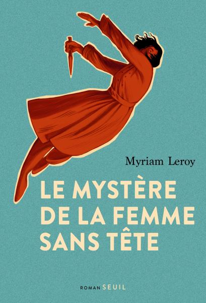
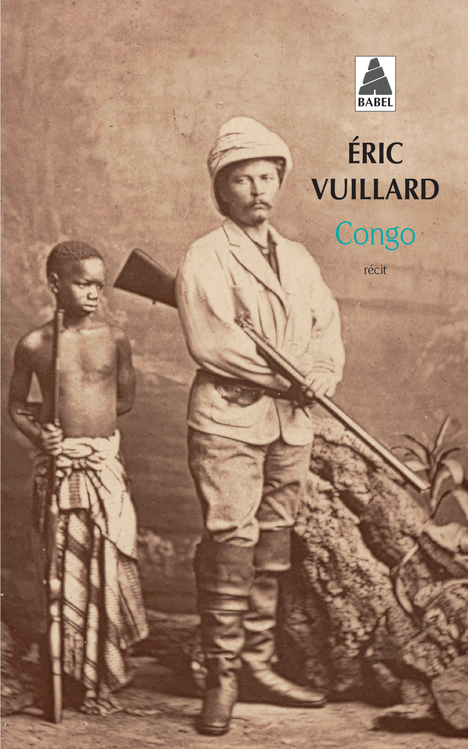

Ce 21 juillet, c’est la fête nationale belge et le club de lecture s’est tenu hier, à deux pas et juste avant le Bal National dans les Marolles, quartier populaire historique de Bruxelles. Du coup, le thème était tout trouvé : la Belgique, tout simplement. J’ai bien quelques livres dans ma bibliothèque qui traitent du sujet.

Celui-ci nous emmène à Bruxelles de nos jours et pendant la Seconde Guerre mondiale. L’écrivaine et journaliste belge Myriam Leroy (dont c’est le troisième roman après Ariane et Les yeux rouges) y reconstitue la vie de Marina Chafroff, une femme belge d’origine russe décapitée par les nazis en 1942 pour avoir tenté d’en assassiner un. L’autrice nous fait revivre cette histoire en grande partie oubliée, de même qu’elle nous partage ses recherches et son obsession pour cette femme dont il n’est pas forcément simple d’établir les motivations. Le mystère de la femme sans tête nous fait ainsi découvrir un pan méconnu de la résistance en Belgique tout en nous baladant dans Bruxelles et ses environs.

On passe de la Seconde à la Première Guerre mondiale avec Lequel de nous portera l’autre ? de l’autrice tournaisienne Violaine Lison. On change aussi de lieu, quittant Bruxelles pour les tranchées flamandes de l’Yser et la région d’Ath. Ce récit reconstruit à partir des carnets retrouvés du brancardier Léonce Delaunoy m’a beaucoup plu, j’en parlais d’ailleurs par ici il y a quelques mois. Là encore, l’autrice nous partage ses réflexions et nous fait alterner entre passé et présent, tandis qu’elle donne du sens à de précieuses reliques de temps difficiles.

Parce qu’il serait un peu facile d’éluder la question de la colonisation, et même si des auteurs belges (comme David Van Reybrouck) ont écrit sur le sujet, il se trouve que j’ai récemment lu le Congo du français Eric Vuillard et qu’il m’a plu. J’en parlais d’ailleurs ici même il y a quelques jours. C’est un tout petit livre qui ne se concentre pas particulièrement sur la Belgique elle-même, mais donne bien sûr un rôle important à l’infâme roi Léopold II et à ses envoyés sur place. La Belgique est encore loin d’avoir digéré et réalisé un travail de mémoire complet sur son passé colonial, il est bien qu’on lui remette de temps à autre le nez dans ses propres atrocités.